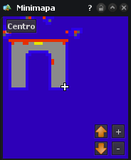
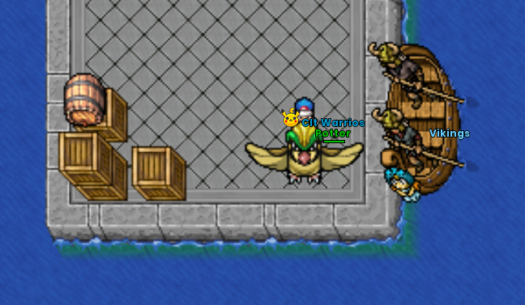

Mewtwo Clones Quest
Instancia cooperativa del Castillo de Mewtwo con tres dificultades y grupos de dos a cuatro jugadores.
Cómo llegar
La entrada está en el Castillo de Mewtwo. La ruta indicada es viajar a Mandarin Island, localizar a los Vikings y tomar su barco.



Iniciar la instancia
Dentro del castillo baja al subterráneo. Ahí se encuentran las puertas de entrada. Antes de iniciar, forma un grupo de entre 2 y 4 jugadores.
Dificultades
| Dificultad | Nivel mínimo | Referencia |
|---|---|---|
| Easy | 150 | Entrada accesible |
| Medium | 300 | Recomendada en la guía original |
| Hard | 420 | Mayor exigencia |
Reglas y reinicio
- Grupo mínimo de 2 y máximo de 4.
- La guía indica una finalización por personaje cada mes.
- El reinicio se realiza el primer día de cada mes.
- No se describe penalización por perder: puede reintentarse.
Sistema de buffs
Dentro de la instancia se pueden elegir buffs. Solo se seleccionan una vez por intento y desaparecen tanto al ganar como al perder, por lo que conviene coordinarlos con el grupo.
Recompensas
Las recompensas dependen de la dificultad elegida y cada dificultad puede ofrecer recompensas exclusivas. El material proporcionado no incluye el detalle exacto de cada tabla de premios.